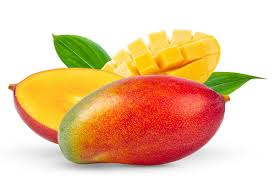
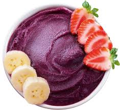
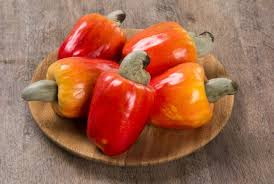
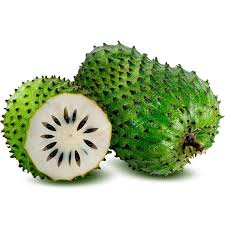

Manga
A manga é uma fruta tropical doce, suculenta e muito popular no Brasil. Rica em vitaminas A e C, é perfeita para sucos, sobremesas e consumo natural.
Saiba MaisDescubra os sabores, aromas e cores das frutas tropicais mais famosas do Brasil. Uma viagem refrescante pela biodiversidade brasileira.

A manga é uma fruta tropical doce, suculenta e muito popular no Brasil. Rica em vitaminas A e C, é perfeita para sucos, sobremesas e consumo natural.
Saiba Mais
O açaí é um símbolo da Amazônia. Conhecido pelo alto valor energético, é consumido em tigelas, smoothies e sobremesas refrescantes.
Saiba Mais
O caju é famoso tanto pela castanha quanto pelo fruto suculento. Muito presente no Nordeste brasileiro, é usado em sucos e doces.
Saiba Mais
A graviola possui sabor único e refrescante. Muito usada em vitaminas, sorvetes e sucos tropicais.
Saiba MaisO Brasil possui centenas de espécies de frutas tropicais espalhadas por seus biomas.
espécies catalogadas